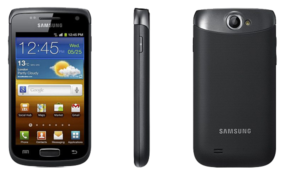

삼성 갤럭시 W
1. 외관

삼성전자가 2011년 8월에 출시한 안드로이드 스마트폰.
2. 사양
| 프로세서 | 퀄컴 스냅드래곤 S2 MSM8255T SoC. Qualcomm Scorpion 1.4 GHz CPU, 퀄컴 Adreno 205 GPU | ||
| 메모리 | 512 MB LPDDR2 SDRAM, 2 GB 내장 메모리, micro SDHC (최대 32GB 지원) | ||
| 디스플레이 |
3.7인치 WVGA(480 x 800) RGB 서브픽셀 방식의 TFT-LCD (252 ppi) 멀티터치 지원 정전식 터치 스크린 |
||
| 네트워크 | 기본 | HSDPA & HSUPA & UMTS, GSM & EDGE | Wi-Fi 802.11b/g/n, 블루투스 3.0+A2DP |
| - | - | ||
| 카메라 | 전면 30만 화소, 후면 500만 화소 AF 및 LED 플래시 | ||
| 배터리 | Li-lon 1500 mAh | ||
| 운영체제 | 안드로이드 2.3 (Gingerbread) | ||
| 규격 | 59.8 x 115.5 x 11.5 mm, 114.7 g | ||
3. 상세
2011년 2월 MWC2011에서 정해진 삼성전자의 스마트폰 네이밍 법칙(S-R-W-M-Y)에 의해서 중급기기에 해당되는 기기다.
출시일 기준으로 사양을 보면 퀄컴 스냅드래곤 S2, 3.7인치 WVGA 해상도, 500만 화소 카메라는 나름대로 평타를 치는 사양이었다.
쉽게말해서 진저브레드이면서 싱글코어인 옵티머스 2X라 생각하면 이해하기 쉽다.